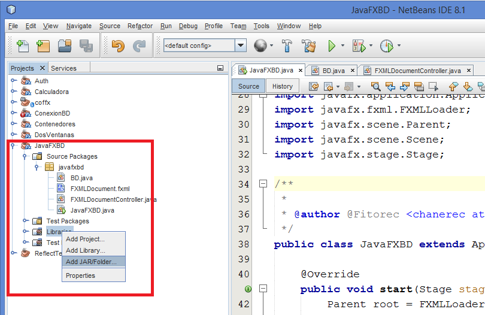
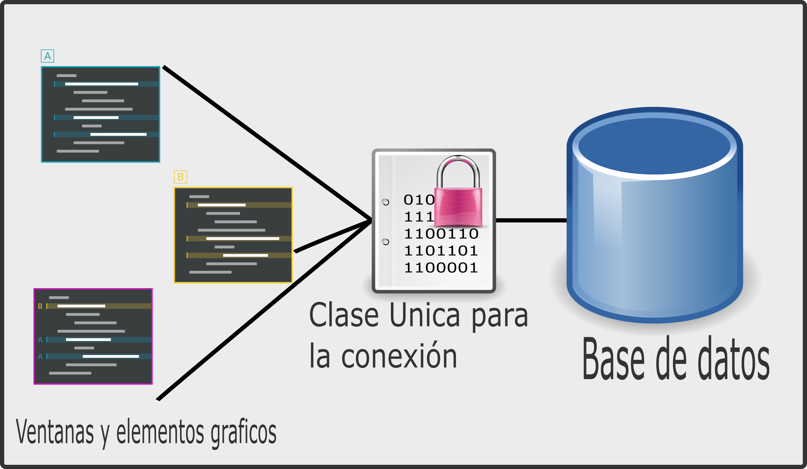

- 3.1. Introducción.
- 3.2. Controles de acceso a datos.
- 3.3. Herramientas de acceso a datos.
- 3.4. Manipulación de datos.
3.2. Controles de acceso a datos.
MySQL y Java(Oracle) nos proporciona un manejador(driver) conector a MySQL que podemos descargar para realizar nuestras conexiones:
Una vez descargado descomprimimos el paquetes y agregamos la librería a nuestro proyecto, para esto extendemos el proyecto nos vamos a “librerías”(o libraries) y agregamos un jar, como se muestra en la siguiente imagen:

Diseñando la lógica del acceso a la BD.
En ocasiones el mal diseño de un sistema nos puede a generar múltiples conexiones una base de datos. Imaginemos un sistema que realice múltiples consultas y para cada consulta establezca una nueva conexión, de tal forma que en algún momento tendremos tantas conexiones que MySQL nos generaría el siguiente error:
"Unable to connect to database: Too many connections"
Una aparente “solución” es modificar el archivo de configuración en el archivo my.cnf(o my.ini) de MySQL en donde se define el atributo max_connections el cual podríamos modificar para que acepte mas conexiones, pero eso no resolvería el mal diseño de nuestro software.
Pare de sufrir llego el singletón
En ingeniería de software, el patrón singleton (instancia única en inglés) es un patrón de diseño diseñado para restringir la creación de objetos pertenecientes a una clase o el valor de un tipo a un único objeto.
Su intención consiste en garantizar que una clase sólo tenga una instancia y proporcionar un punto de acceso global a ella.

Veamos un primer acercamiento del como podría quedar esta clase:
public class BD {
private static Connection conexion = null;
// El constructor privado no permite que se generen clases
private BD() {}
// Esta es la uníca función publica, la cual permite acceder a la conexión
public static Connection getConexion() {
if (BD.conexion == null) {
BD.conectar();
}
return BD.conexion;
}
private static void conectar() {
}
}
Como podemos ver la clase impide que se puedan generar instancias de ella al hacer privado su constructor, por otra parte tiene un atributo de clase con el nombre conexion del tipo Connection, y la unica forma de acceder a este atributo es por medio de la función getConexion(), la cual revisa si la conexión no esta abierta(Si conexion es null) entonces manda a llamar al otro método privado con nombre conectar().
Conexión a bases de datos:
Una vez que definimos un ejemplo básico veamos como quedaría la función conectar(), antes de esto vamos a definir unos atributos a la clase BD, en donde pondremos los datos de la conexión.
private static String host = "localhost";
private static String port = "3306";
private static String bd = "test";
private static String user = "root";
private static String password = "";
El proceso para realizar una conexión a una base de datos, es basicamente:
Registrar Driver MySQL > Generar la Conexión
Una vez explicado el proceso veamos como quedaríafinalmente la función conectar():
private static void conectar() {
try {
DriverManager.registerDriver(new com.mysql.jdbc.Driver());
BD.conexion = DriverManager.getConnection (
"jdbc:mysql://" + BD.host + ":" + BD.port + "/" + BD.bd,
BD.user,
BD.password
);
} catch (Exception e) {
e.printStackTrace();
}
}